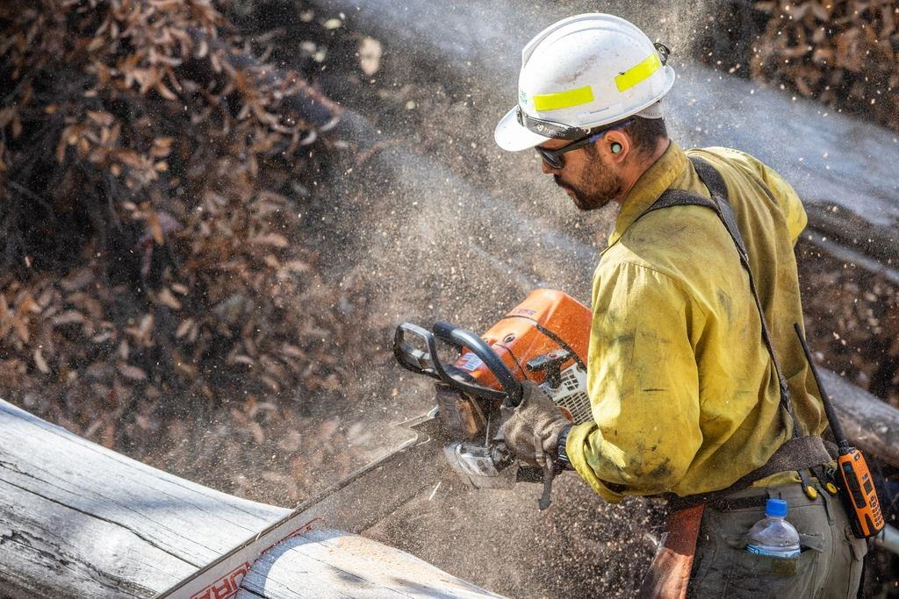
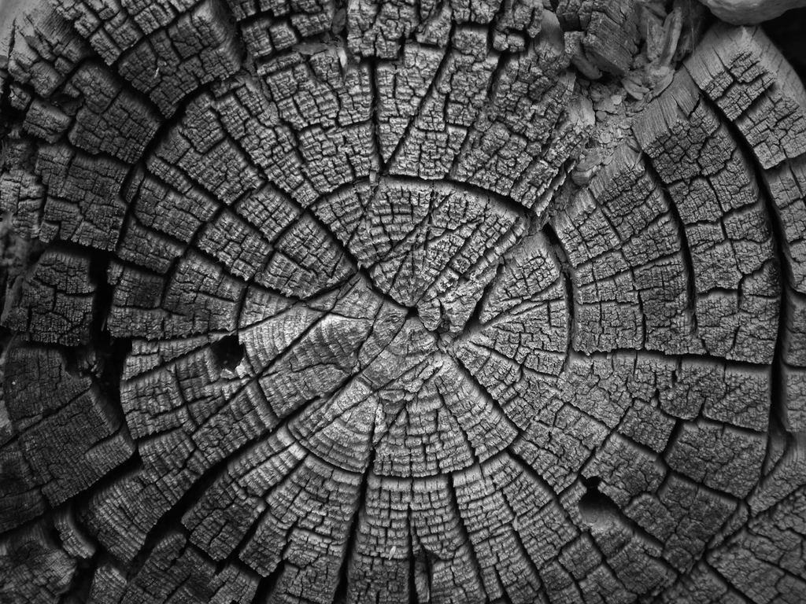

Tjänster
Ungefär hälften av vår tid går till besiktningar och hälften till åtgärderna efteråt: beskärning, kronstabilisering och fällning. Beställarna är församlingar, kommuner, skolor och vägföreningar – men också villaägare som vill ha ett skriftligt svar innan de bestämmer sig för grannens gamla björk.

Besiktning och protokoll
Vi bedömer varje träd enligt VTA och klassar risken i fyra nivåer. Protokollet innehåller foto, position, mätvärden och rekommenderad åtgärd med tidsgräns.
För större bestånd levererar vi även en karta med alla träd färgkodade efter riskklass.

Mätning med instrument
När ögat inte räcker använder vi ljudtomograf, resistograf och dragprov. Det visar om ett ihåligt träd fortfarande är tillräckligt starkt.
Ungefär vart tredje träd som misstänks vara farligt visar sig kunna stå kvar.

Åtgärder efter besiktning
Vi utför beskärning, kronstabilisering och fällning enligt protokollet. Den som besiktade trädet är med när åtgärden görs.
Vill du hellre anlita någon annan för åtgärderna går det också bra.

Avtal för förvaltare
Kyrkogårdar, skolor och badplatser bör besiktas med jämna mellanrum. Vi lägger upp ett schema där riskträd kontrolleras årligen och övriga vart tredje år.
Församlingar i Falun, Borlänge och Leksand har avtal med oss.
Från beställning till protokoll
- 1

Beställning
Du beskriver trädet eller beståndet och vad du vill veta. Vi föreslår rätt nivå av besiktning.
- 2

Bedömning på plats
Vi går igenom träden enligt VTA. Där ögat inte räcker mäter vi med tomograf eller dragprov.
- 3

Protokoll
Inom tio arbetsdagar får du protokoll med foto, mätvärden, riskklass och åtgärd med tidsgräns.
- 4

Åtgärd och uppföljning
Vi utför åtgärderna om du vill och lägger in nästa kontroll i kalendern.
Kvalificerade att bedöma risk
- ISA Certified ArboristJohan och Karolina är ISA-certifierade, Johan även som ISA Tree Risk Assessment Qualified.
- European Tree WorkerAlla som utför åtgärder är ETW-certifierade eller under certifiering.
- Utbildad i tomografiInstrumentleverantörens certifierade utbildning i ljudtomografi och dragprov.
- Konsult- och ansvarsförsäkringFörsäkring för både rådgivning och utfört arbete, upp till 10 Mkr.